umi400h
对外汇报 review report
概况 Headline
total segments
200,551
kept
107,399
53.6% of total
dropped
93,152
46.4% of total
hours total
389.2 h
hours kept
210.8 h
清洗前后对照 Before / After
| metric | before | after |
|---|---|---|
| segments | 200551 | 107399 |
| hours | 389.204 | 210.751 |
| unique_bags | 10858 | 7684 |
任务分布偏移 Keep rate by skill
Funnel (dropped per filter, priority order)
| filter | dropped |
|---|---|
| vio | 56511 |
| dedup | 36641 |
drop_reason distribution
VIO episode drops (episode-level gate)
episodes dropped (vio)
3,169
segments dropped (vio)
56,511
去重 Dedup
dedup rate
18.27%
36,641/200,551 dropped by dedup
dup clusters
9,638
size > 1
segments involved
182,035
Top dup cluster 14202 (size=22990)
REP
shard-00000:4:0-89:both
MEMBER
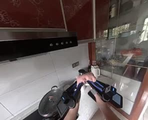
shard-00000:4:404-524:both sim=0.980
MEMBER
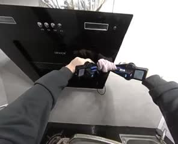
shard-00000:1027:2249-2894:both sim=0.984
MEMBER
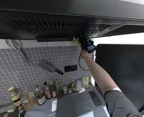
shard-00000:2287:1904-2024:right sim=0.984
MEMBER
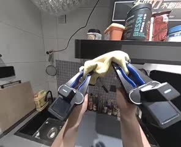
shard-00000:3525:5174-5774:both sim=0.978
MEMBER
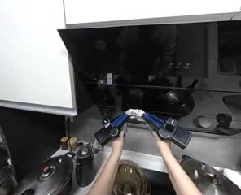
shard-00001:423:809-3524:both sim=0.960
MEMBER
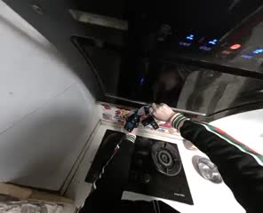
shard-00001:1483:2594-2699:both sim=0.978
MEMBER
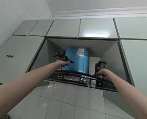
shard-00001:2546:1994-2189:right sim=0.990
MEMBER
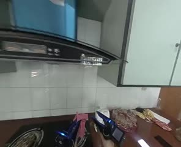
shard-00001:3870:104-164:left sim=0.993
MEMBER
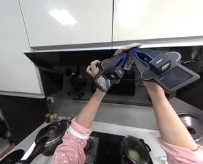
shard-00002:739:1439-1559:both sim=0.975
MEMBER
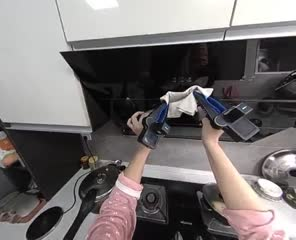
shard-00002:1556:2699-2744:both sim=0.975
MEMBER
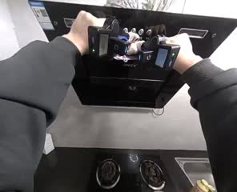
shard-00002:2540:2609-2969:both sim=0.973
showing 12 of 22,990 members of cluster 14202 — the rest are in the manifest parquet.
Top dup cluster 22614 (size=20116)
REP
shard-00000:6:284-1004:both
MEMBER
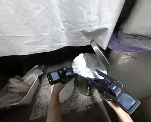
shard-00000:6:14-284:both sim=0.961
MEMBER
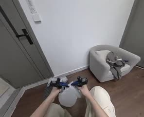
shard-00000:1139:989-1094:both sim=0.986
MEMBER
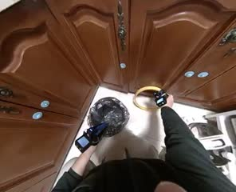
shard-00000:2182:2668-2788:both sim=0.948
MEMBER
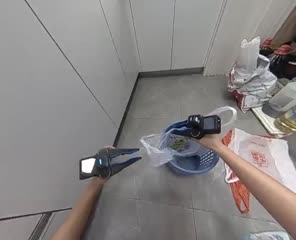
shard-00000:3306:4349-4904:both sim=0.977
MEMBER
shard-00001:222:494-599:left sim=1.000
MEMBER
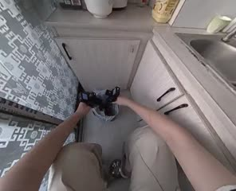
shard-00001:1329:2204-2354:both sim=0.987
MEMBER
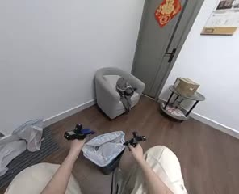
shard-00001:2602:884-1484:both sim=0.982
MEMBER
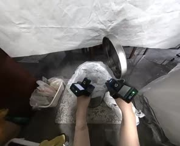
shard-00001:3805:1589-1934:both sim=0.955
MEMBER
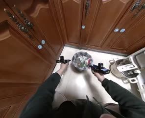
shard-00002:680:914-1214:both sim=0.968
MEMBER
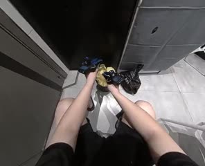
shard-00002:1517:5864-6254:both sim=0.983
MEMBER
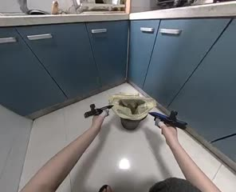
shard-00002:2527:2024-2849:both sim=0.961
showing 12 of 20,116 members of cluster 22614 — the rest are in the manifest parquet.
Top dup cluster 16134 (size=15626)
REP
shard-00000:3:224-329:right
MEMBER
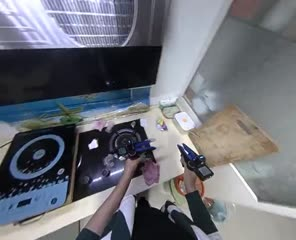
shard-00000:3:329-524:right sim=0.985
MEMBER
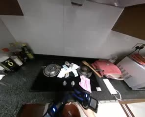
shard-00000:1077:179-299:right sim=0.996
MEMBER
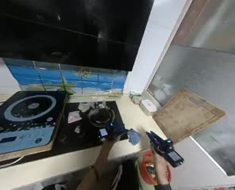
shard-00000:2342:449-584:right sim=0.985
MEMBER
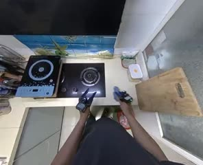
shard-00000:3415:2714-2744:right sim=0.992
MEMBER
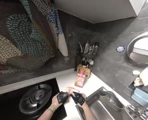
shard-00001:496:134-3629:both sim=0.983
MEMBER
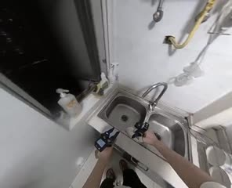
shard-00001:1646:2189-2354:right sim=0.977
MEMBER
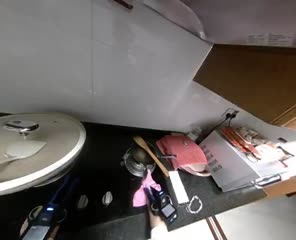
shard-00001:2858:1244-1454:right sim=0.991
MEMBER
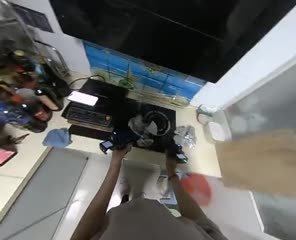
shard-00001:3903:74-194:right sim=0.981
MEMBER
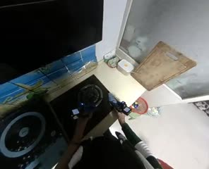
shard-00002:744:3389-3569:right sim=0.975
MEMBER
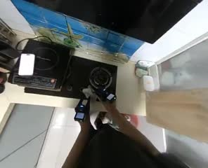
shard-00002:1670:3329-3479:left sim=0.988
MEMBER
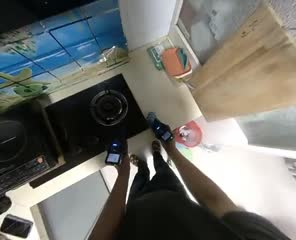
shard-00002:2513:3479-3524:right sim=0.977
showing 12 of 15,626 members of cluster 16134 — the rest are in the manifest parquet.
误杀抽检 Manual spot-check (fill in after human review)
| segment_uid | reviewer | verdict |
|---|
Pipeline (S1 -> S9)
- S1 segment index — enumerate segments + join each episode's ego2 video location
- S2/S3 motion + gripper stats — per-segment low-dim facts (head trans range/path/speed, gripper range/std/flips per arm)
- S4 text embeddings — SigLIP2 text encoder over segment labels/sst
- S5 visual embeddings — SigLIP2 background-frame encoder
- S6 dedup facts — text buckets, candidate visual pairs, action/grip distances (facts only, no verdict)
- S7 verdict — apply confirmed thresholds + priority order over S1-S6 facts -> keep/drop_reason (the only stage that decides keep/drop)
- S8 report — this static review site
- S9 materialize — write an approved S7 verdict into a loadable segment tree